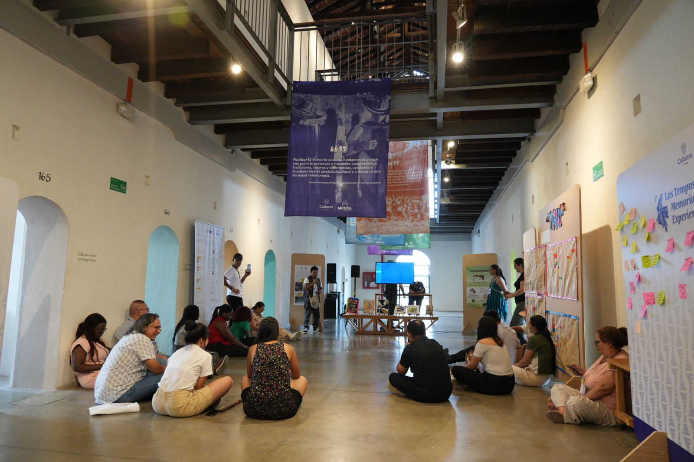
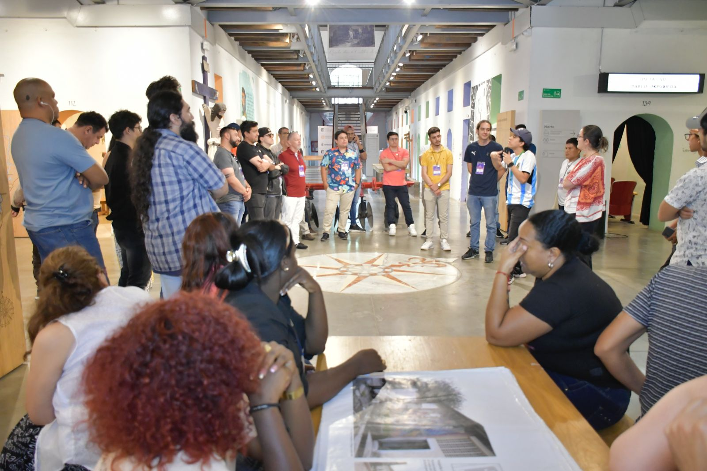
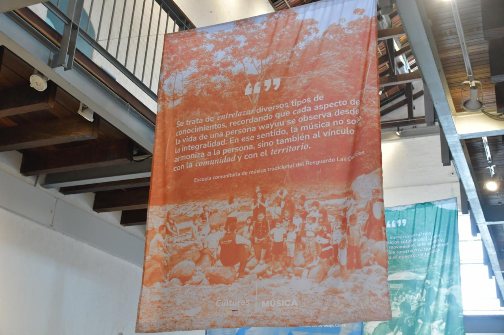
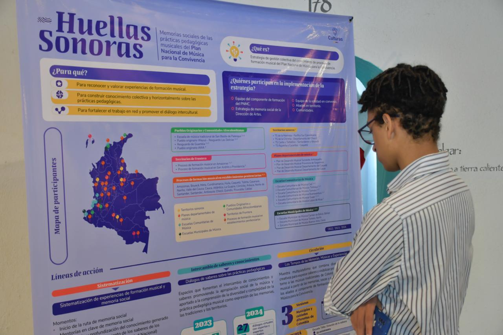
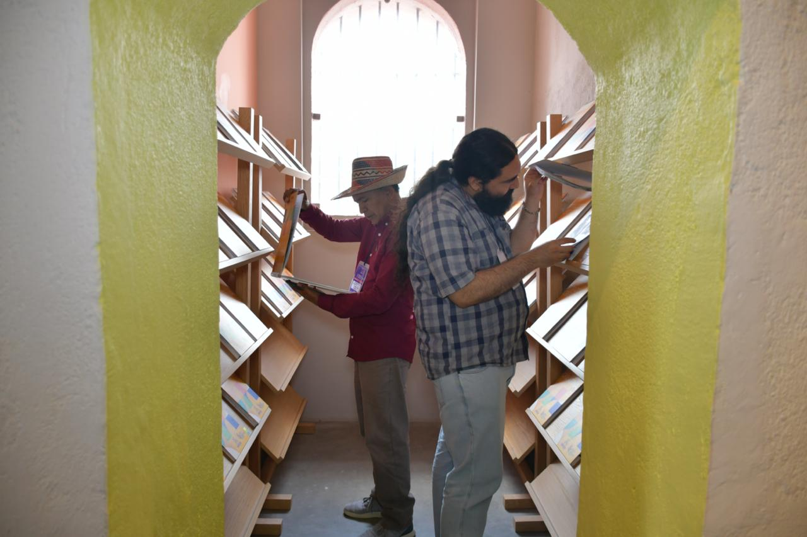
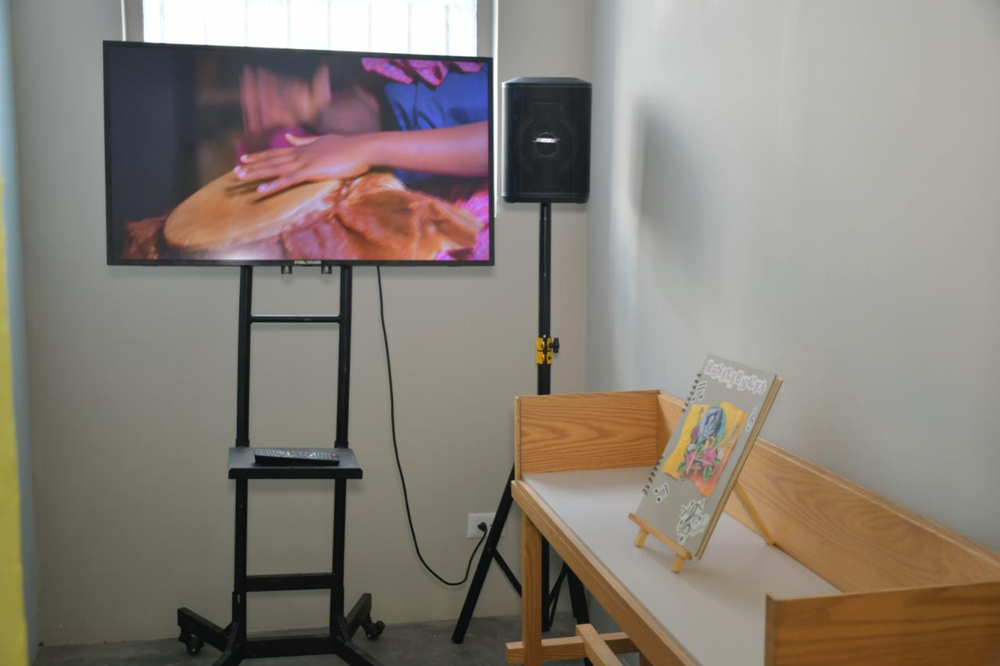
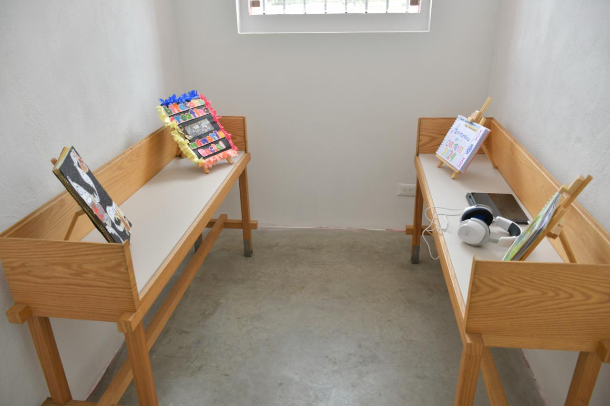

home
los tempos de las memorias, músicas y experiencias - 2024
(the tempos of memories, musics and experiences)
curator
museo panóptico de ibagué
tolima, colombia
2024
exhibition text:
since 2022, los tempos de las memorias, músicas y experiencias has become a meeting space that embraces all ways of living the music of colombia. regardless of where it takes place, this gathering has always brought together in one place the sounds of the deep valleys that cradle the rivers, the andean peaks and their icy winds, the coasts and jungles, the plains and deserts.
in the two previous editions, we traveled through the territories and listened to their stories through diverse social memories that served as an excuse to meet, recognize, and listen to each other. and although this third edition continues that journey, it is also a promise to keep building our shared horizons. because today we understand that recognizing our collective history, our sounding traces, is vital to project our future.
so this gathering that brings us together today is a celebration. we celebrate that music education remains the force that moves us. we celebrate that our reflections are increasingly profound. we celebrate that our actions are increasingly sensitive. we celebrate that we are more and more diverse bodies and collectives meeting, dancing, singing, thinking, and feeling the music of the country.
we also prepare for new challenges, committed to the idea that music will continue to guide us on our path toward a more just, equitable, and peaceful society. an idea we affirm every time we focus on the social memories that are part of this year's gathering, where each territory, community, and experience contributes a unique and valuable voice, full of knowledge and wisdom. this year, we reaffirm that memory is a weave of voices that listen, dialogue, and complement each other.
we have nothing more to do but welcome you to this third edition of los tempos de las memorias, músicas y experiencias, a space that keeps growing and that with each year becomes deeper, where all voices fill the space, all rhythms resonate, and all stories weave the collective fabric we are building.







installation views: ministerio de las culturas, las artes y los saberes de colombia